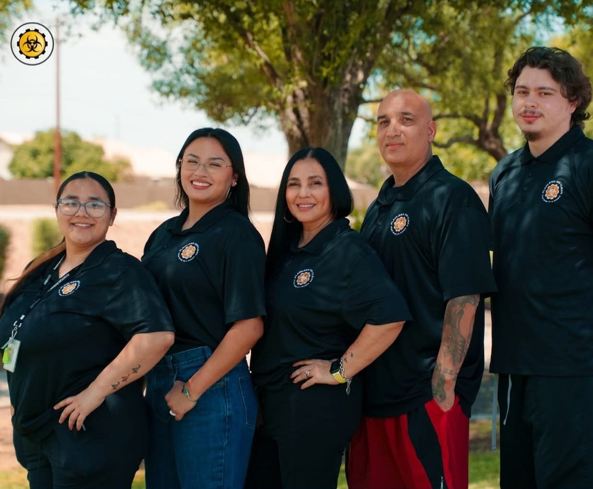
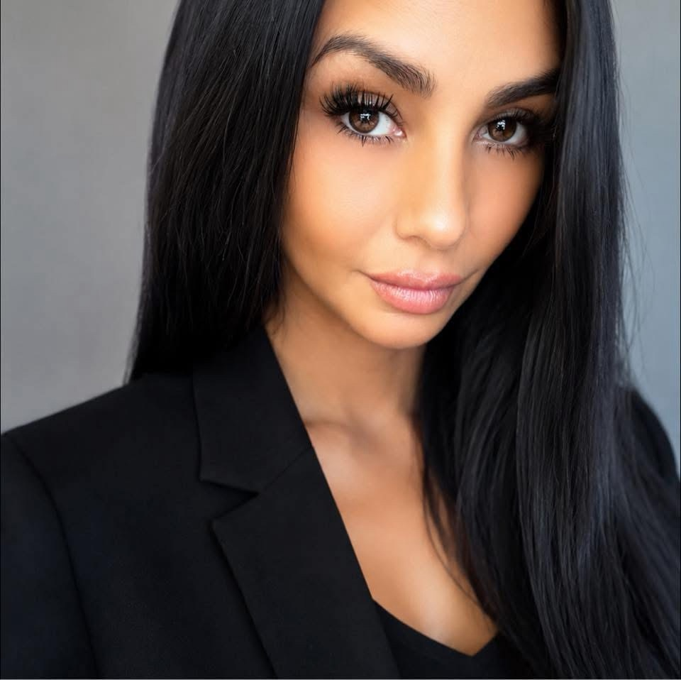
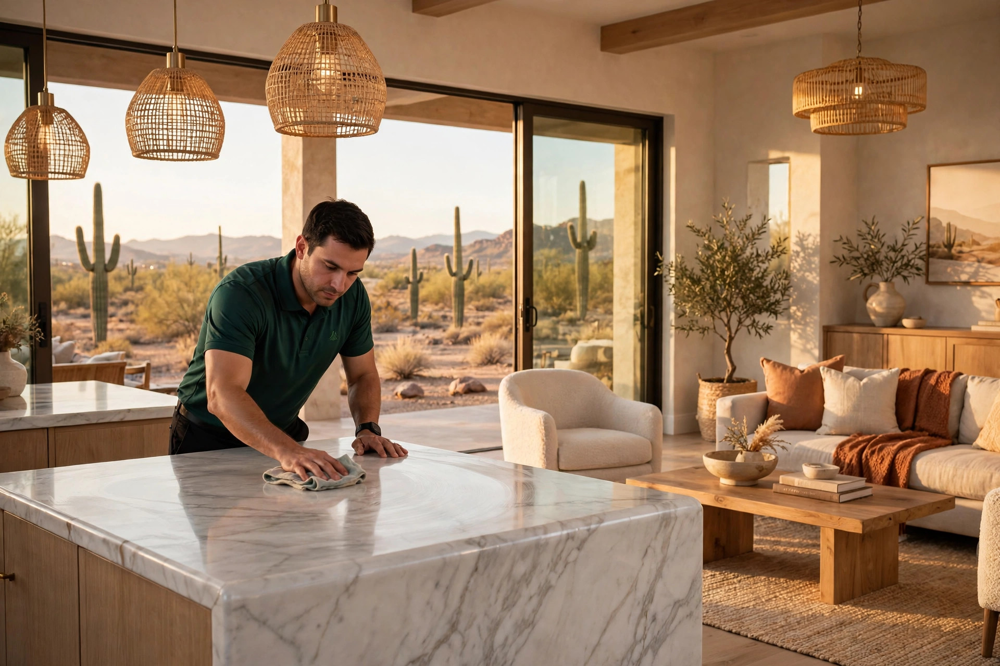

Field Operations
The crews on site across Arizona — scheduled programs, turnovers and one-time work, executed to the same written standard on every visit.
Flawless Bio Clean is a family-owned commercial cleaning company based in the East Valley and serving all of Arizona. The company has built its approach around sensitive environments—cleanrooms, medical spaces, data centers and other facilities where a generic approach falls short.
The commitment is straightforward: trained in-house technicians, clear communication and hands-on owner oversight.

PEOPLE / PROCESS / PRECISION
YVETTE VALENTI — OWNER & FOUNDEROWNER & FOUNDER
Yvette Valenti founded Flawless Bio Clean LLC on experience earned in the hardest work in the cleaning industry. Seven years ago, she started with a company specializing in biohazard cleaning — work that included hoarding cleanups, crime scene cleaning, and COVID-19 disinfection. That foundation taught her that a truly clean space is not just about how it looks. It is about safety, care, and doing the job right when it matters most.
From there, Yvette started her own business, cleaning homes and Airbnbs across the East Valley. As her reputation grew, so did the work: she expanded into commercial cleaning and earned advanced certifications in crime scene cleaning, cleanroom cleaning, biohazard cleaning, and data center cleaning — bringing biohazard-level sanitation to pharmacies, labs, medical offices, and commercial facilities.
Today, Flawless Bio Clean is a family business. Yvette and her family bring that same science-based standard to every job, from a family home to a sterile cleanroom.
“Clean. Safe. Flawless.
Down to a science.”
7 YEARS OF PROFESSIONAL CLEANING EXPERIENCE · SERVING ALL OF ARIZONA · (480) 589-6200
Flawless doesn’t run on one pair of hands. Behind the founder stands an in-house operation organized into four working divisions — the structure that lets one standard hold across cleanrooms, crisis scenes and commercial floors statewide.
The crews on site across Arizona — scheduled programs, turnovers and one-time work, executed to the same written standard on every visit.

Owner-led communication, scheduling and quality oversight — one accountable point of contact on every account, every time.

Controlled environments cleaned to facility protocol — cleanrooms, laboratories, semiconductor spaces and data centers.

Crime scene, hoarding and disinfection work — the founding discipline of this company, handled with discretion, documentation and care.
Service delivered by in-house crews rather than an opaque contractor chain.
Cleaning protocols developed around the customer's space and operating conditions.
Owner-led quality control and clear service communications.

Homes and Airbnbs are the heart of Flawless — and the same company also serves clinics, commercial facilities, cleanrooms and data centers across Arizona.
See our services ↗Use our interactive scoping assistant to organize the essential details for a cleaning discussion — for a home or a facility. Advanced operations start with the right questions.
Preview experience — generates an on-page scope outline only. No AI diagnosis, certification, price quote, live chat, or automatic submission.